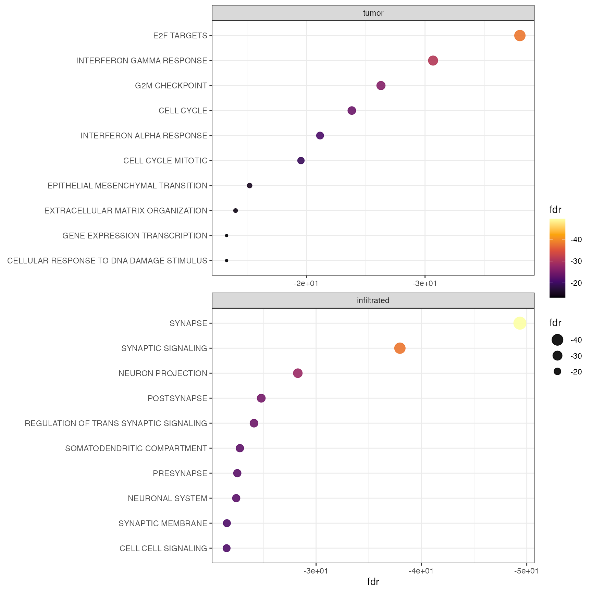
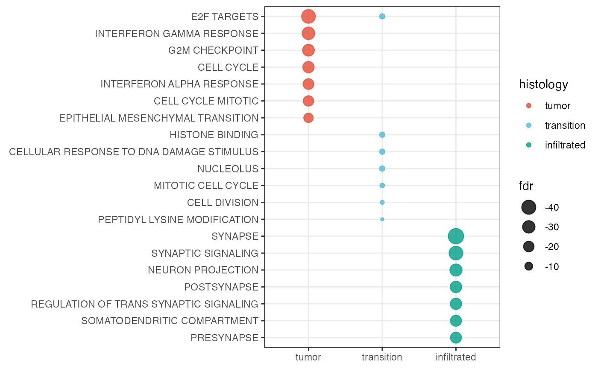

Gene Set Enrichment Analysis
gsea.Rmd1. Introduction
Make sure to be familiar with the tutorials about Differential Expression Analysis and Molecular Variables. For a deeper
into the results of the DEA one can look for gene sets that are enriched
in the proposed clustering or created based on histology.
SPATA2 implements the hypeR package
which uses hypergeometric testing for enriched gene sets.
# load required packages
library(SPATA2)
library(tidyverse)
# load SPATA2 inbuilt example data
object_t269 <- loadExampleObject("UKF269T", process = TRUE, meta = TRUE)
# plot histology
plotSurface(object_t269, color_by = "histology", pt_clrp = "npg")
# plot bayes space cluster
plotSurface(object_t269, color_by = "bayes_space", pt_clrp = "uc")

2. Running Gene Set Enrichment Analysis (GSEA)
The function runGSEA() conducts the computation. It
requires the results from runDEA() which conducts the
differential expressiona nalysis. By default, the function uses all gene
sets that are saved in the SPATA2 object. If there are gene
sets that you don’t want to test against you can provide a subsetted
list of gene sets. The default example object object_t269
has been created with initiateSpataObjectVisium() and
contains a variety of gene sets of multiple classes (Hallmark, Biocarta,
etc.) marked with a corresponding prefix like HM or
BC.
gs_list <- getGeneSetList(object_t269)
head(gs_list)## $BC_41BB_PATHWAY
## [1] "IFNG" "TNFSF9" "IL4" "NFKBIA" "TNFRSF9" "IL2" "MAP4K5"
## [8] "MAPK8" "MAP3K5" "CHUK" "MAPK14" "RELA" "TRAF2" "ATF2"
## [15] "IKBKB" "NFKB1" "MAP3K1" "JUN"
##
## $BC_ACE2_PATHWAY
## [1] "REN" "COL4A1" "AGT" "CMA1" "COL4A6" "ACE2" "ACE" "COL4A5"
## [9] "AGTR2" "AGTR1" "COL4A2" "COL4A3" "COL4A4"
##
## $BC_ACETAMINOPHEN_PATHWAY
## [1] "CYP1A2" "CYP2E1" "PTGS2" "PTGS1" "NR1I3"
##
## $BC_ACH_PATHWAY
## [1] "FASLG" "PIK3CG" "RAPSN" "PIK3R1" "FOXO3" "YWHAH" "CHRNG" "CHRNB1"
## [9] "BAD" "PTK2B" "TERT" "MUSK" "AKT1" "PIK3CA"
##
## $BC_ACTINY_PATHWAY
## [1] "ACTA1" "WASF1" "PSMA7" "NTRK1" "RAC1" "WASF2" "ABI2" "NCK1"
## [9] "PIR" "NCKAP1" "WASF3" "WASL"
##
## $BC_AGPCR_PATHWAY
## [1] "GRK4" "GNAS" "PRKACG" "PRKAR1A" "PRKAR2B" "PRKCB" "PRKACB"
## [8] "ARRB1" "PRKAR1B" "PRKCA" "PRKAR2A"
length(gs_list)## [1] 11654For the sake of clarity, this example only uses Biocarta (BC) and Hallmark (HM) gene sets.
# subset gene sets that start with HM or BC
gs_list_sub <- getGeneSetList(object_t269, class = c("BC", "HM"))
length(gs_list_sub)## [1] 339## $HM_NOTCH_SIGNALING
## [1] "JAG1" "NOTCH3" "NOTCH2" "APH1A" "HES1" "CCND1" "FZD1"
## [8] "PSEN2" "FZD7" "DTX1" "DLL1" "FZD5" "MAML2" "NOTCH1"
## [15] "PSENEN" "WNT5A" "CUL1" "WNT2" "DTX4" "SAP30" "PPARD"
## [22] "KAT2A" "HEYL" "SKP1" "RBX1" "TCF7L2" "ARRB1" "LFNG"
## [29] "PRKCA" "DTX2" "ST3GAL6" "FBXW11"
##
## $BC_MEF2D_PATHWAY
## [1] "HDAC2" "HDAC1" "CALM1" "MEF2D" "CAPN2" "NFATC2" "PPP3CA" "PRKCB"
## [9] "CALM2" "PPP3CB" "CAPNS1" "CALM3" "CABIN1" "EP300" "PRKCA" "NFATC1"
## [17] "CAPNS2" "PPP3CC"
##
## $BC_HSWI_SNF_PATHWAY
## [1] "SMARCD1" "NF1" "NR3C1" "SMARCC2" "SMARCA4" "ARID1A" "SMARCC1"
## [8] "ACTB" "SMARCB1" "TBP" "GTF2A1" "SMARCE1"Use argument signatures if you want to run GSEA only on
a subset of gene sets. Keep it empty if you want to test against all
gene sets stored in the SPATA2 object_t269.
object_t269 <-
runGSEA(
object = object_t269,
across = "histology",
background = 21563,
signatures = gs_list_sub
)3. Extracting results
The results can be manually extracted via the following functions.
getGseaResults() extracts a list of hypeR
object_t269s - on for each group. getGseaResultsDf()
extracts a data.frame that results from merging the data of all
hypeR object_t269s together. The group belonging of each
gene set is saved in the variable/column that is named according to the
grouping variable - here histology.
getGseaDf(
object = object_t269,
across = "histology",
method_de = "wilcox",
n_gsets = 3 # extract top 20 most significant gene sets
) ## # A tibble: 9 × 10
## # Groups: histology [3]
## histology label pval fdr signature geneset overlap background hits
## <fct> <fct> <dbl> <dbl> <int> <int> <int> <dbl> <chr>
## 1 tumor HM_E… 8.60e-43 1 e-38 5082 200 143 20000 AURK…
## 2 tumor HM_I… 3.60e-35 2.10e-31 5082 196 132 20000 STAT…
## 3 tumor HM_G… 1.3 e-30 5.20e-27 5082 196 126 20000 AURK…
## 4 transition MF.G… 2.40e- 9 2.70e- 5 1192 200 36 20000 CHD1…
## 5 transition BP.G… 6 e- 9 2.8 e- 5 1192 856 94 20000 TANK…
## 6 transition HM_E… 8.40e- 9 2.8 e- 5 1192 200 35 20000 DNMT…
## 7 infiltrated CC.G… 3.80e-54 4.50e-50 1950 1332 315 20000 CDH8…
## 8 infiltrated BP.G… 1.90e-42 1.10e-38 1950 733 198 20000 CDH8…
## 9 infiltrated CC.G… 1.4 e-32 5.40e-29 1950 1317 266 20000 HDAC…
## # ℹ 1 more variable: overlap_perc <dbl>4. Plotting results
Gene set enrichment results can be visualized via dot plots. This can
be either done by group with by_group = TRUE or merged for
all groups. Figure 2 visualizes the enrichment for cluster 0 and 5
highlighting the hypoxia associated activity in this area.
plotGseaDotPlot(
object = object_t269,
across = "histology",
across_subset = c("tumor", "infiltrated"),
n_gsets = 10,
by_group = TRUE,
transform_with = list(fdr = log10),
nrow = 2
)
Using by_group = FALSE, the results are merged to one
plot.
plotGseaDotPlot(
object = object_t269,
across = "histology",
color_by = "histology",
n_gsets = 7,
pt_alpha = 0.8,
transform_with = list(fdr = log10),
by_group = FALSE # merge in one plot
) 